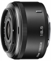

器材库 > APS画幅镜头 > 1 NIKKOR 18.5/1.8

详细规格
镜头类型
标准镜头
发布日期
2012-09-13
厂家推荐价格
31,500.00 （日元）
焦距
18.5mm
等效35mm画幅焦距
50mm
最大光圈
f/1.8
最小光圈
f/16
视角（对角）
46.67
镜头结构
8片/6组
非球面镜片
1片
光圈叶片
7（圆形光圈口）片
最近对焦距离
20cm
最大放大倍率
0.12倍(等效135画幅约0.32倍)倍
滤镜口径
40.5mm
镜头卡口
Nikon 1
防抖
否
颜色
银色, 黑色, 白色
尺寸
56x36mm
重量
70g
darechen2014-08-11 10:234.25 分
操作性 4.50耐用性 4.00性价比 4.00解像力 4.50色彩还原 4.50机械结构 4.00
teda1232014-01-21 15:594.67 分
操作性 5.00耐用性 4.50性价比 4.00解像力 5.00色彩还原 5.00机械结构 4.50
上帝武装2013-08-25 11:084.33 分
操作性 4.00耐用性 4.00性价比 4.50解像力 4.50色彩还原 4.50机械结构 4.50
蓝色射线2013-02-13 14:534.25 分
操作性 4.00耐用性 4.50性价比 4.00解像力 5.00色彩还原 4.00机械结构 4.00